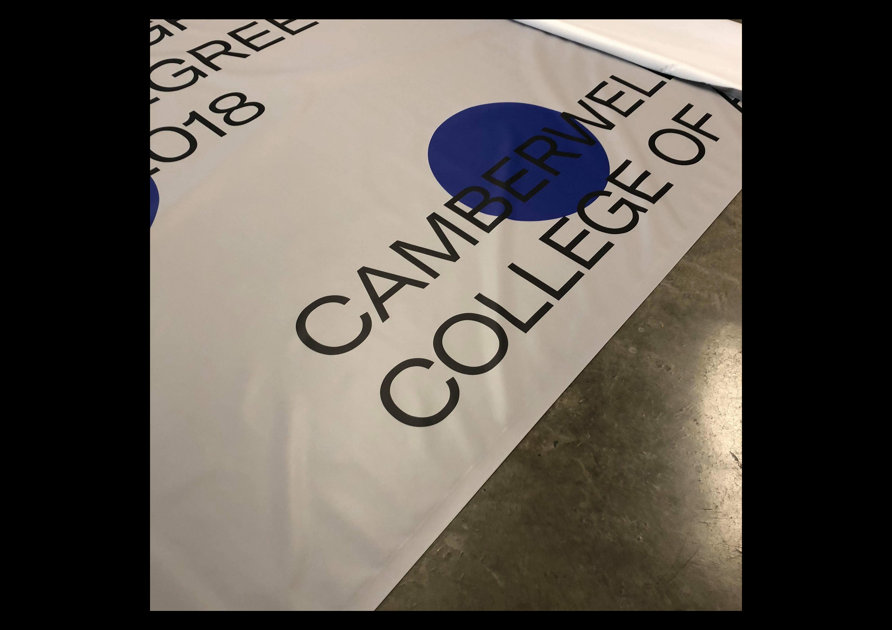
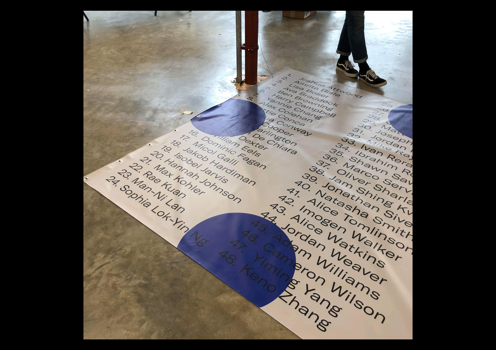
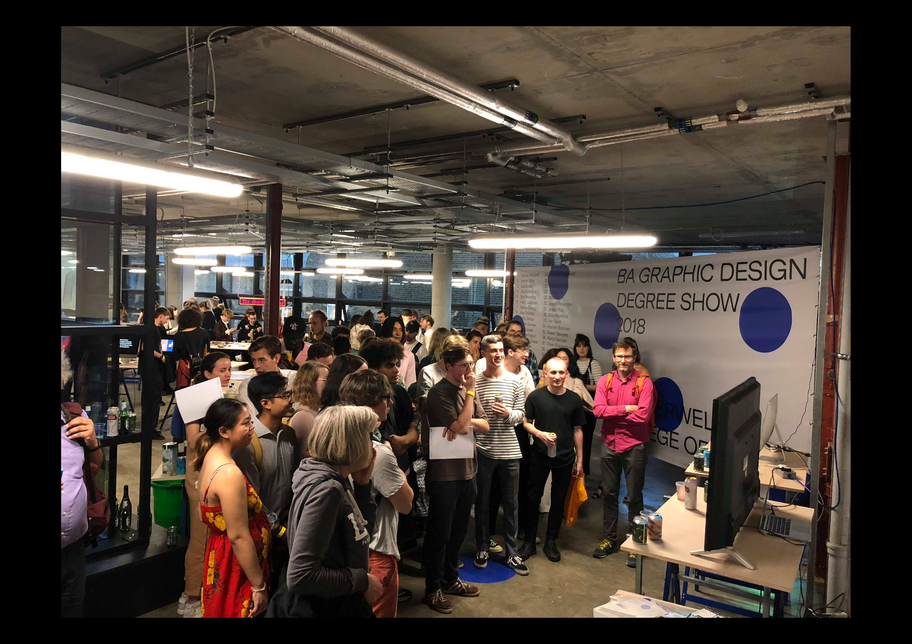
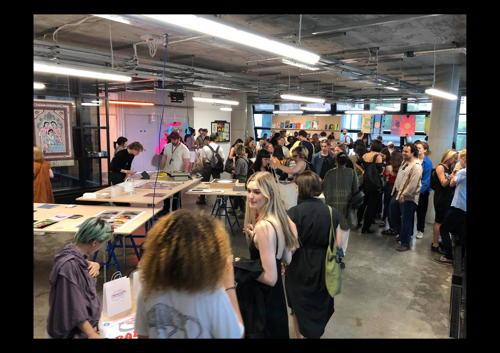

← Return
BA Graphic Design Degree Show — Camberwell 2018
Working in collaboration with Max Kohler, with creative direction from Shawn Sawyers; I worked on the website for the Camberwell College of Arts Graphic Design Degree Show.
The focus of the website was a 24/7 live broadcast of the exhibition space, from the beginning of the curation process to the end of the show.
The core concept surrounding the identity was to highlight the variety of work, and working processes found on the course. Supporting this idea, we decided to randomise the images of students' work each time the page is loaded.
The full team responsible for the development of the exhibition includes: Josh Attwood, Will Eels, Max Kohler, Katherine Marriott, Shawn Sawyers, Natasha Smith-Langridge, Imogen Walker, and Jordan Weaver.



